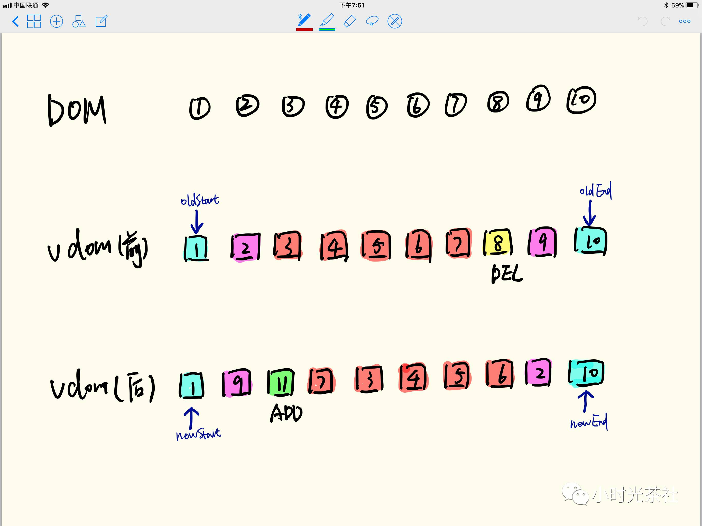
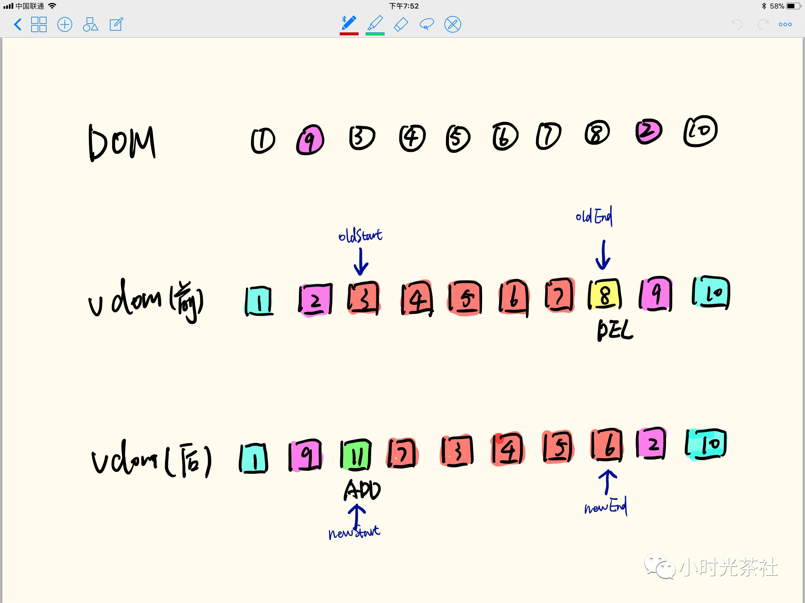
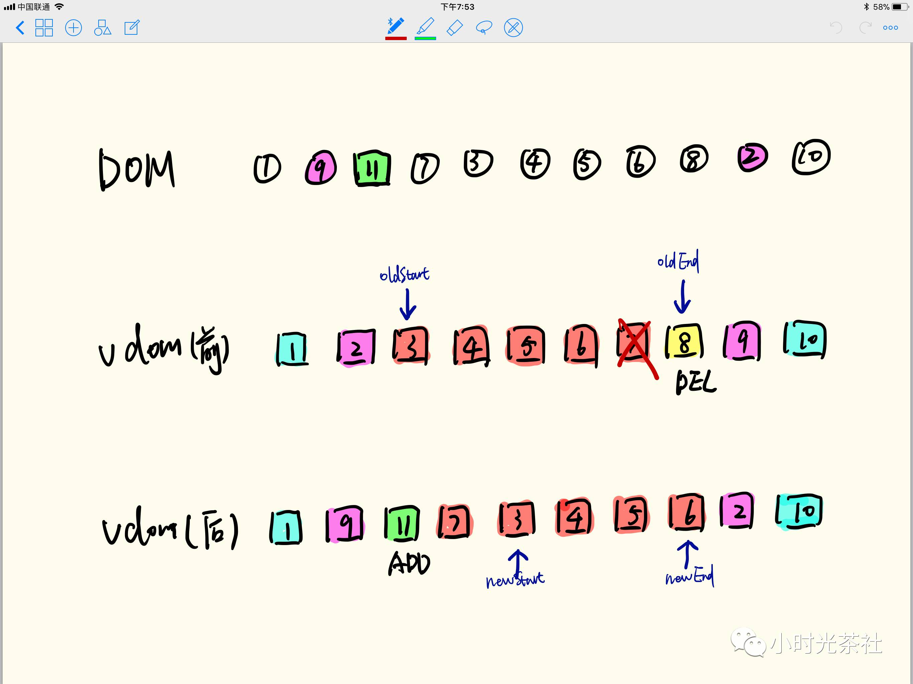
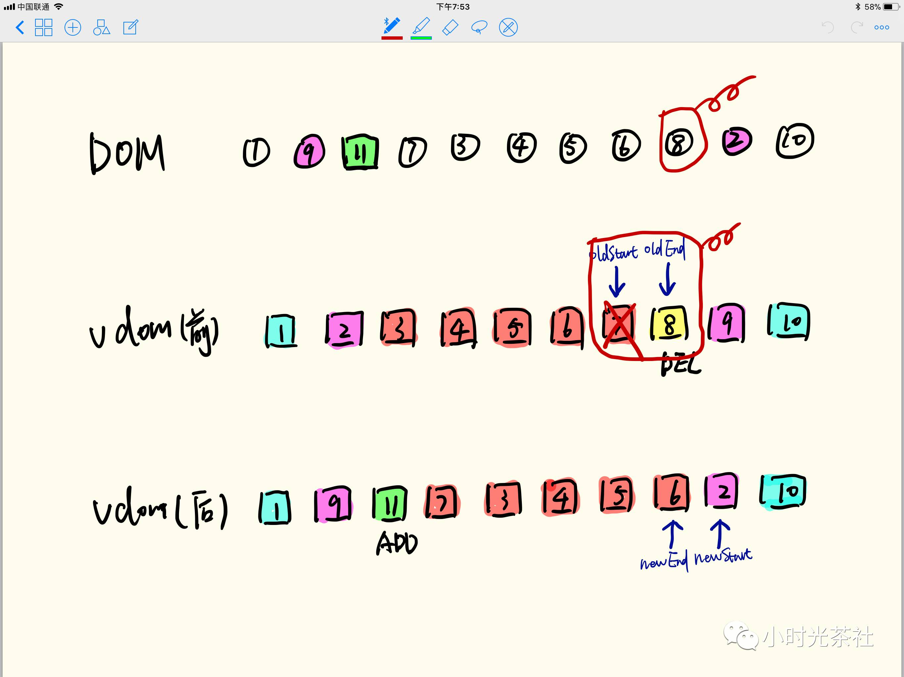

<!DOCTYPE html>
<html>
<head><meta name="generator" content="Hexo 3.8.0">
  <meta charset="utf-8">
  
  <title>虚拟DOM | LIUXUEWEN&#39;S BLOG</title>
  <meta name="viewport" content="width=device-width, initial-scale=1, maximum-scale=1">
  
    <meta name="keywords" content="LIUXUEWEN,LIUXUEWEN's Blog">
  
  <meta name="description" content="一、虚拟DOM出现  先介绍浏览器加载一个HTML文件需要做哪些事，帮助我们理解为什么需要虚拟DOM。webkit引擎的处理流程如下：      所有浏览器的引擎工作流程都差不多，如上图大致分5步：创建DOM tree –&amp;gt; 创建Style Rules -&amp;gt; 构建Render tree -&amp;gt; 布局Layout –&amp;gt; 绘制Painting   1）第一步，用HTML分析器，分">
<meta name="keywords" content="前端-JS">
<meta property="og:type" content="article">
<meta property="og:title" content="虚拟DOM">
<meta property="og:url" content="http://liuxuewen-site.github.io/2018/09/16/JS-bs-virtualDom/index.html">
<meta property="og:site_name" content="LIUXUEWEN&#39;S BLOG">
<meta property="og:description" content="一、虚拟DOM出现  先介绍浏览器加载一个HTML文件需要做哪些事，帮助我们理解为什么需要虚拟DOM。webkit引擎的处理流程如下：      所有浏览器的引擎工作流程都差不多，如上图大致分5步：创建DOM tree –&amp;gt; 创建Style Rules -&amp;gt; 构建Render tree -&amp;gt; 布局Layout –&amp;gt; 绘制Painting   1）第一步，用HTML分析器，分">
<meta property="og:locale" content="default">
<meta property="og:image" content="http://liuxuewen-site.github.io/2018/09/16/JS-bs-virtualDom/1.jpg">
<meta property="og:image" content="http://liuxuewen-site.github.io/2018/09/16/JS-bs-virtualDom/2.png">
<meta property="og:image" content="http://liuxuewen-site.github.io/2018/09/16/JS-bs-virtualDom/3.jpg">
<meta property="og:image" content="http://liuxuewen-site.github.io/2018/09/16/JS-bs-virtualDom/4.png">
<meta property="og:image" content="http://liuxuewen-site.github.io/2018/09/16/JS-bs-virtualDom/5.png">
<meta property="og:image" content="http://liuxuewen-site.github.io/2018/09/16/JS-bs-virtualDom/6.jpg">
<meta property="og:image" content="http://liuxuewen-site.github.io/2018/09/16/JS-bs-virtualDom/7.jpg">
<meta property="og:image" content="http://liuxuewen-site.github.io/2018/09/16/JS-bs-virtualDom/8.jpg">
<meta property="og:image" content="http://liuxuewen-site.github.io/2018/09/16/JS-bs-virtualDom/9.jpg">
<meta property="og:image" content="http://liuxuewen-site.github.io/2018/09/16/JS-bs-virtualDom/10.jpg">
<meta property="og:image" content="http://liuxuewen-site.github.io/2018/09/16/JS-bs-virtualDom/11.jpg">
<meta property="og:image" content="http://liuxuewen-site.github.io/2018/09/16/JS-bs-virtualDom/12.jpg">
<meta property="og:image" content="http://liuxuewen-site.github.io/2018/09/16/JS-bs-virtualDom/13.jpg">
<meta property="og:image" content="http://liuxuewen-site.github.io/2018/09/16/JS-bs-virtualDom/14.jpg">
<meta property="og:image" content="http://liuxuewen-site.github.io/2018/09/16/JS-bs-virtualDom/15.jpg">
<meta property="og:image" content="http://liuxuewen-site.github.io/2018/09/16/JS-bs-virtualDom/16.jpg">
<meta property="og:image" content="http://liuxuewen-site.github.io/2018/09/16/JS-bs-virtualDom/17.jpg">
<meta property="og:updated_time" content="2018-09-17T18:49:13.979Z">
<meta name="twitter:card" content="summary">
<meta name="twitter:title" content="虚拟DOM">
<meta name="twitter:description" content="一、虚拟DOM出现  先介绍浏览器加载一个HTML文件需要做哪些事，帮助我们理解为什么需要虚拟DOM。webkit引擎的处理流程如下：      所有浏览器的引擎工作流程都差不多，如上图大致分5步：创建DOM tree –&amp;gt; 创建Style Rules -&amp;gt; 构建Render tree -&amp;gt; 布局Layout –&amp;gt; 绘制Painting   1）第一步，用HTML分析器，分">
<meta name="twitter:image" content="http://liuxuewen-site.github.io/2018/09/16/JS-bs-virtualDom/1.jpg">
  
  
    <link rel="icon" href="/favicon.ico">
  
  <link href="//cdn.bootcss.com/font-awesome/4.7.0/css/font-awesome.min.css" rel="stylesheet" type="text/css">
  <link rel="stylesheet" href="/css/style.css">
  <script src="/js/pace.min.js"></script>
  

  
  

</head>
</html>
<body>
  <div id="container">
      <header id="header">
    <div id="banner"></div>
    <div id="header-outer">
        <div id="header-menu" class="header-menu-pos animated">
            <div class="header-menu-container">
                <a href="/" class="left">
                    <span class="site-title">I AM LIUXUEWEN</span>
                </a>
                <nav id="header-menu-nav" class="right">
                    
                    <a href="/">
                        <i class="fa fa-home"></i>
                        <span>Home</span>
                    </a>
                    
                    <a href="/archives">
                        <i class="fa fa-archive"></i>
                        <span>Archives</span>
                    </a>
                    
                    <a href="/about">
                        <i class="fa fa-user"></i>
                        <span>About</span>
                    </a>
                    
                </nav>
                <a class="mobile-header-menu-button">
                    <i class="fa fa-bars"></i>
                </a>
            </div>
        </div>
        <div id="header-row">
            <div id="logo">
                <a href="/">
                    
                </a>
            </div>
            <div class="header-info">
                <div id="header-title">
                    
                    <h2>
                        I AM LIUXUEWEN
                    </h2>
                    
                </div>
                <div id="header-description">
                    
                    <h3>
                        一个 宅不住 的 IT程序员
                    </h3>
                    
                </div>
            </div>
            <nav class="header-nav">
                <div class="social">
                    
                        <a title="Github" target="_blank" href="//github.com/liuxuewen-site">
                            <i class="fa fa-github fa-2x"></i></a>
                    
                        <a title="Weibo" "="">
                            <i class="fa fa-weibo fa-2x"></i></a>
                    
                        <a title="Weixin" "="">
                            <i class="fa fa-weixin fa-2x"></i></a>
                    
                </div>
            </nav>
        </div>
    </div>
</header>
      <div class="outer">
        <section id="main" class="body-wrap"><article id="post-JS-bs-virtualDom" class="article article-type-post" itemscope="" itemprop="blogPost">
  <div class="article-inner">
    
      <header class="article-header">
        
  
    <h1 class="post-title" itemprop="name">
      虚拟DOM
    </h1>
    <div class="post-title-bar">
      <ul>
          
              <li>
                  <i class="fa fa-book"></i>
                  
                      <a href="/categories/前端/">前端</a>
                  
              </li>
          
        <li>
          <i class="fa fa-calendar"></i>  2018-09-16
        </li>
        <li>
          <i class="fa fa-eye"></i>
          <span id="busuanzi_value_page_pv"></span>
        </li>
      </ul>
    </div>
  

          
      </header>
    
    <div class="article-entry post-content" itemprop="articleBody">
      
            
            <h3 id="一、虚拟DOM出现"><a href="#一、虚拟DOM出现" class="headerlink" title="一、虚拟DOM出现"></a>一、虚拟DOM出现</h3><p>  先介绍浏览器加载一个HTML文件需要做哪些事，帮助我们理解为什么需要虚拟DOM。webkit引擎的处理流程如下：</p>
<p>  </p>
<p>  所有浏览器的引擎工作流程都差不多，如上图大致分5步：创建DOM tree –&gt; 创建Style Rules -&gt; 构建Render tree -&gt; 布局Layout –&gt; 绘制Painting</p>
<p>  1）第一步，用HTML分析器，分析HTML元素，构建一颗DOM树。<br>  2）第二步，用CSS分析器，分析CSS文件和元素上的inline样式，生成页面的样式表。<br>  3）第三步，将上面的DOM树和样式表关联起来，构建一颗Render树。这一过程又称为Attachment。每个DOM节点都有attach方法，接受样式信息，返回一个render对象（又名renderer）。这些render对象最终会被构建成一颗Render树。<br>  4）第四步，有了Render树后，浏览器开始布局，会为每个Render树上的节点确定一个在显示屏上出现的精确坐标值。<br>  5）第五步，Render数有了，节点显示的位置坐标也有了，最后就是调用每个节点的paint方法，让它们显示出来。</p>
<p>  当你用传统的源生api或jQuery去操作DOM时，浏览器会从构建DOM树开始从头到尾执行一遍流程。比如当你在一次操作时需要更新10个DOM节点，理想状态是一次性构建完DOM树，再执行后续操作。但浏览器没这么智能，收到第一个更新DOM请求后，并不知道后续还有9次更新操作，因此会马上执行流程，最终执行10次流程。显然例如计算DOM节点的坐标值等都是白白浪费性能，可能这次计算完，紧接着的下一个DOM更新请求，这个节点的坐标值就变了，前面的一次计算是无用功。</p>
<p>  即使计算机硬件一直在更新迭代，操作DOM的代价仍旧是昂贵的，频繁操作还是会出现页面卡顿，影响用户的体验。真实的DOM节点，哪怕一个最简单的div也包含着很多属性，可以打印出来直观感受一下：</p>
<p>  </p>
<p>  虚拟DOM就是为了解决这个浏览器性能问题而被设计出来的。例如前面的例子，假如一次操作中有10次更新DOM的动作，虚拟DOM不会立即操作DOM，而是将这10次更新的diff内容保存到本地的一个js对象中，最终将这个js对象一次性attach到DOM树上，通知浏览器去执行绘制工作，这样可以避免大量的无谓的计算量。</p>
<p>  Virtual DOM本质上就是在 JS 和 DOM 之间做了一个缓存。</p>
<h3 id="二、虚拟DOM算法"><a href="#二、虚拟DOM算法" class="headerlink" title="二、虚拟DOM算法"></a>二、虚拟DOM算法</h3><p>  一个真实的DOM节点如下：<br>  <figure class="highlight bash"><table><tr><td class="gutter"><pre><span class="line">1</span><br><span class="line">2</span><br><span class="line">3</span><br><span class="line">4</span><br><span class="line">5</span><br></pre></td><td class="code"><pre><span class="line">&lt;ul id=<span class="string">'list'</span>&gt;</span><br><span class="line">  &lt;li class=<span class="string">'item'</span>&gt;Item 1&lt;/li&gt;</span><br><span class="line">  &lt;li class=<span class="string">'item'</span>&gt;Item 2&lt;/li&gt;</span><br><span class="line">  &lt;li class=<span class="string">'item'</span>&gt;Item 3&lt;/li&gt;</span><br><span class="line">&lt;/ul&gt;</span><br></pre></td></tr></table></figure></p>
<p>  用js对象来模拟DOM节点如下：<br>  <figure class="highlight bash"><table><tr><td class="gutter"><pre><span class="line">1</span><br><span class="line">2</span><br><span class="line">3</span><br><span class="line">4</span><br><span class="line">5</span><br><span class="line">6</span><br><span class="line">7</span><br><span class="line">8</span><br><span class="line">9</span><br><span class="line">10</span><br><span class="line">11</span><br></pre></td><td class="code"><pre><span class="line">var element = &#123;</span><br><span class="line">    tagName: <span class="string">'ul'</span>,           // 节点标签名</span><br><span class="line">    props: &#123;                 // DOM的属性，用一个对象存储键值对</span><br><span class="line">        id: <span class="string">'list'</span></span><br><span class="line">    &#125;,</span><br><span class="line">    children: [              // 该节点的子节点</span><br><span class="line">        &#123;tagName: <span class="string">'li'</span>, props: &#123;class: <span class="string">'item'</span>&#125;, children: [<span class="string">"Item 1"</span>]&#125;,</span><br><span class="line">        &#123;tagName: <span class="string">'li'</span>, props: &#123;class: <span class="string">'item'</span>&#125;, children: [<span class="string">"Item 2"</span>]&#125;,</span><br><span class="line">        &#123;tagName: <span class="string">'li'</span>, props: &#123;class: <span class="string">'item'</span>&#125;, children: [<span class="string">"Item 3"</span>]&#125;,</span><br><span class="line">    ]</span><br><span class="line">&#125;</span><br></pre></td></tr></table></figure></p>
<p>  用js对象模拟DOM节点的好处是，页面的更新可以先全部反映在js对象上，操作内存中的js对象的速度显然要快多了。等更新完后，再将最终的js对象映射成真实的DOM，交由浏览器去绘制。</p>
<p>  这就是所谓的 Virtual DOM 算法，包括几个步骤：<br>  1）用JavaScript对象结构表示DOM树的结构，然后用这个树构建一个真正的DOM树，插到文档当中<br>  2）当状态变更的时候，重新构造一棵新的对象树，然后用新的树和旧的树进行比较，记录两棵树差异<br>  3）把2所记录的差异应用到步骤1所构建的真正的DOM树上，视图就更新了</p>
<p>  这里对于步骤1，也即创建虚拟dom到将虚拟dom映射到真实页面上，我们看一下Element方法的具体实现：<br>  <figure class="highlight bash"><table><tr><td class="gutter"><pre><span class="line">1</span><br><span class="line">2</span><br><span class="line">3</span><br><span class="line">4</span><br><span class="line">5</span><br><span class="line">6</span><br><span class="line">7</span><br><span class="line">8</span><br><span class="line">9</span><br><span class="line">10</span><br><span class="line">11</span><br><span class="line">12</span><br><span class="line">13</span><br><span class="line">14</span><br><span class="line">15</span><br><span class="line">16</span><br><span class="line">17</span><br><span class="line">18</span><br><span class="line">19</span><br><span class="line">20</span><br><span class="line">21</span><br><span class="line">22</span><br><span class="line">23</span><br><span class="line">24</span><br><span class="line">25</span><br><span class="line">26</span><br><span class="line">27</span><br><span class="line">28</span><br><span class="line">29</span><br><span class="line">30</span><br><span class="line">31</span><br><span class="line">32</span><br><span class="line">33</span><br><span class="line">34</span><br><span class="line">35</span><br><span class="line">36</span><br><span class="line">37</span><br><span class="line">38</span><br><span class="line">39</span><br><span class="line">40</span><br><span class="line">41</span><br><span class="line">42</span><br><span class="line">43</span><br><span class="line">44</span><br><span class="line">45</span><br><span class="line">46</span><br><span class="line">47</span><br><span class="line">48</span><br><span class="line">49</span><br></pre></td><td class="code"><pre><span class="line">// 创建js对象：</span><br><span class="line"></span><br><span class="line"><span class="keyword">function</span> Element(tagName, props, children) &#123; </span><br><span class="line"></span><br><span class="line">    <span class="keyword">if</span> (!(this instanceof Element)) &#123; </span><br><span class="line">    	  <span class="built_in">return</span> new Element(tagName, props, children); </span><br><span class="line">    &#125; </span><br><span class="line"></span><br><span class="line">    this.tagName = tagName; </span><br><span class="line">    this.props = props || &#123;&#125;; </span><br><span class="line">    this.children = children || []; </span><br><span class="line">    this.key = props ? props.key : undefined; </span><br><span class="line"></span><br><span class="line">    <span class="built_in">let</span> count = 0; </span><br><span class="line">    this.children.forEach((child) =&gt; &#123; </span><br><span class="line">    	  <span class="keyword">if</span> (child instanceof Element) &#123; </span><br><span class="line">              count += child.count; </span><br><span class="line">    	  &#125; </span><br><span class="line">    	  count++; </span><br><span class="line">    &#125;); </span><br><span class="line">    this.count = count; </span><br><span class="line"></span><br><span class="line">&#125;</span><br><span class="line"></span><br><span class="line">第一个参数是节点名（如div），第二个参数是节点的属性（如class），第三个参数是子节点（如ul的li）。</span><br><span class="line">除了这三个参数会被保存在对象上外，还保存了key和count。</span><br><span class="line"></span><br><span class="line"></span><br><span class="line">// 有了js对象后，最终还需要将其映射成真实的DOM：</span><br><span class="line"></span><br><span class="line">Element.prototype.render = <span class="function"><span class="title">function</span></span>() &#123; </span><br><span class="line"></span><br><span class="line">    const el = document.createElement(this.tagName); </span><br><span class="line">    const props = this.props; </span><br><span class="line">    <span class="keyword">for</span> (const propName <span class="keyword">in</span> props) &#123; </span><br><span class="line">    	  setAttr(el, propName, props[propName]); </span><br><span class="line">    &#125; </span><br><span class="line">    this.children.forEach((child) =&gt; &#123; </span><br><span class="line">    	  const childEl = (child instanceof Element) ? child.render() : document.createTextNode(child);</span><br><span class="line">    	  el.appendChild(childEl); </span><br><span class="line">    &#125;); </span><br><span class="line">    <span class="built_in">return</span> el; </span><br><span class="line"></span><br><span class="line">&#125;;</span><br><span class="line"></span><br><span class="line">上面都是自解释代码，</span><br><span class="line">根据DOM名调用源生的createElement创建真实DOM，将DOM的属性全都加到这个DOM元素上，</span><br><span class="line">如果有子元素继续递归调用创建子元素，并appendChild挂到该DOM元素上。</span><br><span class="line">这样就完成了从创建虚拟DOM到将其映射成真实DOM的全部工作。</span><br></pre></td></tr></table></figure></p>
<p>  </p>
<h3 id="三、虚拟DOM实现"><a href="#三、虚拟DOM实现" class="headerlink" title="三、虚拟DOM实现"></a>三、虚拟DOM实现</h3>  <font size="4" face="黑体"><strong> 1）步骤一：用JS对象模拟DOM树 </strong></font>

<p>  用 JavaScript 来表示一个 DOM 节点是很简单的事情，你只需要记录它的节点类型、属性，还有子节点(element.js)：<br>  <figure class="highlight bash"><table><tr><td class="gutter"><pre><span class="line">1</span><br><span class="line">2</span><br><span class="line">3</span><br><span class="line">4</span><br><span class="line">5</span><br><span class="line">6</span><br><span class="line">7</span><br><span class="line">8</span><br><span class="line">9</span><br></pre></td><td class="code"><pre><span class="line"><span class="keyword">function</span> Element (tagName, props, children) &#123;</span><br><span class="line">  this.tagName = tagName</span><br><span class="line">  this.props = props</span><br><span class="line">  this.children = children</span><br><span class="line">&#125;</span><br><span class="line"></span><br><span class="line">module.exports = <span class="keyword">function</span> (tagName, props, children) &#123;</span><br><span class="line">  <span class="built_in">return</span> new Element(tagName, props, children)</span><br><span class="line">&#125;</span><br></pre></td></tr></table></figure></p>
<p>  例如上面的 DOM 结构就可以简单的表示：<br>  <figure class="highlight bash"><table><tr><td class="gutter"><pre><span class="line">1</span><br><span class="line">2</span><br><span class="line">3</span><br><span class="line">4</span><br><span class="line">5</span><br><span class="line">6</span><br><span class="line">7</span><br></pre></td><td class="code"><pre><span class="line">var el = require(<span class="string">'./element'</span>)</span><br><span class="line"></span><br><span class="line">var ul = el(<span class="string">'ul'</span>, &#123;id: <span class="string">'list'</span>&#125;, [</span><br><span class="line">  el(<span class="string">'li'</span>, &#123;class: <span class="string">'item'</span>&#125;, [<span class="string">'Item 1'</span>]),</span><br><span class="line">  el(<span class="string">'li'</span>, &#123;class: <span class="string">'item'</span>&#125;, [<span class="string">'Item 2'</span>]),</span><br><span class="line">  el(<span class="string">'li'</span>, &#123;class: <span class="string">'item'</span>&#125;, [<span class="string">'Item 3'</span>])</span><br><span class="line">])</span><br></pre></td></tr></table></figure></p>
<p>  现在ul只是一个JavaScript对象表示的DOM结构，页面上并没有这个结构，我们可以根据这个ul构建真正的&lt; ul &gt;：<br>  <figure class="highlight bash"><table><tr><td class="gutter"><pre><span class="line">1</span><br><span class="line">2</span><br><span class="line">3</span><br><span class="line">4</span><br><span class="line">5</span><br><span class="line">6</span><br><span class="line">7</span><br><span class="line">8</span><br><span class="line">9</span><br><span class="line">10</span><br><span class="line">11</span><br><span class="line">12</span><br><span class="line">13</span><br><span class="line">14</span><br><span class="line">15</span><br><span class="line">16</span><br><span class="line">17</span><br><span class="line">18</span><br><span class="line">19</span><br><span class="line">20</span><br></pre></td><td class="code"><pre><span class="line">Element.prototype.render = <span class="function"><span class="title">function</span></span> () &#123;</span><br><span class="line">  var el = document.createElement(this.tagName)    // 根据tagName构建</span><br><span class="line">  var props = this.props</span><br><span class="line"></span><br><span class="line">  <span class="keyword">for</span> (var propName <span class="keyword">in</span> props) &#123;                    // 设置节点的DOM属性</span><br><span class="line">    var propValue = props[propName]</span><br><span class="line">    el.setAttribute(propName, propValue)</span><br><span class="line">  &#125;</span><br><span class="line"></span><br><span class="line">  var children = this.children || []</span><br><span class="line"></span><br><span class="line">  children.forEach(<span class="keyword">function</span> (child) &#123;</span><br><span class="line">    var childEl = (child instanceof Element)</span><br><span class="line">      ? child.render()                            // 如果子节点也是虚拟DOM，递归构建DOM节点</span><br><span class="line">      : document.createTextNode(child)            // 如果字符串，只构建文本节点</span><br><span class="line">    el.appendChild(childEl)</span><br><span class="line">  &#125;)</span><br><span class="line"></span><br><span class="line">  <span class="built_in">return</span> el</span><br><span class="line">&#125;</span><br></pre></td></tr></table></figure></p>
<p>  render方法会根据tagName构建一个真正的DOM节点，然后设置这个节点的属性，最后递归地把自己的子节点也构建起来。所以只需要：<br>  <figure class="highlight bash"><table><tr><td class="gutter"><pre><span class="line">1</span><br><span class="line">2</span><br></pre></td><td class="code"><pre><span class="line">var ulRoot = ul.render()</span><br><span class="line">document.body.appendChild(ulRoot)</span><br></pre></td></tr></table></figure></p>
<p>  上面的ulRoot是真正的DOM节点，把它塞入文档中，这样body里面就有了真正的&lt; ul &gt;的DOM结构：<br>  <figure class="highlight bash"><table><tr><td class="gutter"><pre><span class="line">1</span><br><span class="line">2</span><br><span class="line">3</span><br><span class="line">4</span><br><span class="line">5</span><br></pre></td><td class="code"><pre><span class="line">&lt;ul id=<span class="string">'list'</span>&gt;</span><br><span class="line">  &lt;li class=<span class="string">'item'</span>&gt;Item 1&lt;/li&gt;</span><br><span class="line">  &lt;li class=<span class="string">'item'</span>&gt;Item 2&lt;/li&gt;</span><br><span class="line">  &lt;li class=<span class="string">'item'</span>&gt;Item 3&lt;/li&gt;</span><br><span class="line">&lt;/ul&gt;</span><br></pre></td></tr></table></figure></p>
  <font size="4" face="黑体"><strong> 2）步骤二：比较两棵虚拟DOM树的差异 </strong></font>

<p>  比较两棵DOM树的差异是 Virtual DOM 算法最核心的部分，这也是所谓 diff 算法。两个树的完全 diff 算法是一个时间复杂度为 O(n^3) 的问题。在前端当中，你很少会跨越层级地移动DOM元素，所以 Virtual DOM 只会对同一个层级的元素进行对比，下面的div只会和同一层级的div对比，第二层级的只会跟第二层级对比，这样算法复杂度就可以达到 O(n)：</p>
<p>  </p>
<p>  a、深度优先遍历，记录差异</p>
<p>  在实际的代码中，会对新旧两棵树进行一个深度优先的遍历，这样每个节点都会有一个唯一的标记：</p>
<p>  </p>
<p>  在深度优先遍历的时候，每遍历到一个节点就把该节点和新的的树进行对比。如果有差异的话就记录到一个对象里面：<br>  <figure class="highlight bash"><table><tr><td class="gutter"><pre><span class="line">1</span><br><span class="line">2</span><br><span class="line">3</span><br><span class="line">4</span><br><span class="line">5</span><br><span class="line">6</span><br><span class="line">7</span><br><span class="line">8</span><br><span class="line">9</span><br><span class="line">10</span><br><span class="line">11</span><br><span class="line">12</span><br><span class="line">13</span><br><span class="line">14</span><br><span class="line">15</span><br><span class="line">16</span><br><span class="line">17</span><br><span class="line">18</span><br><span class="line">19</span><br><span class="line">20</span><br><span class="line">21</span><br><span class="line">22</span><br><span class="line">23</span><br><span class="line">24</span><br><span class="line">25</span><br><span class="line">26</span><br><span class="line">27</span><br></pre></td><td class="code"><pre><span class="line">// diff 函数，对比两棵树</span><br><span class="line"><span class="keyword">function</span> diff (oldTree, newTree) &#123;</span><br><span class="line">  var index = 0                                        // 当前节点的标志</span><br><span class="line">  var patches = &#123;&#125;                                     // 用来记录每个节点差异的对象</span><br><span class="line">  dfsWalk(oldTree, newTree, index, patches)</span><br><span class="line">  <span class="built_in">return</span> patches</span><br><span class="line">&#125;</span><br><span class="line"></span><br><span class="line">// 对两棵树进行深度优先遍历</span><br><span class="line"><span class="keyword">function</span> dfsWalk (oldNode, newNode, index, patches) &#123;</span><br><span class="line">  patches[index] = [...]                               // 对比oldNode和newNode的不同，记录下来</span><br><span class="line">  diffChildren(oldNode.children, newNode.children, index, patches)</span><br><span class="line">&#125;</span><br><span class="line"></span><br><span class="line">// 遍历子节点</span><br><span class="line"><span class="keyword">function</span> diffChildren (oldChildren, newChildren, index, patches) &#123;</span><br><span class="line">  var leftNode = null</span><br><span class="line">  var currentNodeIndex = index</span><br><span class="line">  oldChildren.forEach(<span class="keyword">function</span> (child, i) &#123;</span><br><span class="line">    var newChild = newChildren[i]</span><br><span class="line">    currentNodeIndex = (leftNode &amp;&amp; leftNode.count)     // 计算节点的标识</span><br><span class="line">      ? currentNodeIndex + leftNode.count + 1</span><br><span class="line">      : currentNodeIndex + 1</span><br><span class="line">    dfsWalk(child, newChild, currentNodeIndex, patches) // 深度遍历子节点</span><br><span class="line">    leftNode = child</span><br><span class="line">  &#125;)</span><br><span class="line">&#125;</span><br></pre></td></tr></table></figure></p>
<p>  例如，上面的div和新的div有差异，当前的标记是0，那么：<br>  <figure class="highlight bash"><table><tr><td class="gutter"><pre><span class="line">1</span><br><span class="line">2</span><br><span class="line">3</span><br></pre></td><td class="code"><pre><span class="line">// 用数组存储新旧节点的不同，同理p是patches[1]，ul是patches[3]，类推。</span><br><span class="line"></span><br><span class="line">patches[0] = [&#123;difference&#125;, &#123;difference&#125;, ...]</span><br></pre></td></tr></table></figure></p>
<p>  b、差异类型</p>
<p>  上面说的节点的差异指的是什么呢？对 DOM 操作可能会：<br>  1）替换掉原来的节点，例如把上面的div换成了section<br>  2）移动、删除、新增子节点，例如上面div的子节点，把p和ul顺序互换<br>  3）修改了节点的属性<br>  4）对于文本节点，文本内容可能会改变。例如修改上面的文本节点2内容为Virtual DOM 2。</p>
<p>  所以我们定义了几种差异类型：<br>  <figure class="highlight bash"><table><tr><td class="gutter"><pre><span class="line">1</span><br><span class="line">2</span><br><span class="line">3</span><br><span class="line">4</span><br></pre></td><td class="code"><pre><span class="line">var REPLACE = 0</span><br><span class="line">var REORDER = 1</span><br><span class="line">var PROPS = 2</span><br><span class="line">var TEXT = 3</span><br></pre></td></tr></table></figure></p>
<p>  如果是节点替换，判断新旧节点的tagName和是不是一样的，如果不一样的说明需要替换掉。如div换成section，就记录下：<br>  <figure class="highlight bash"><table><tr><td class="gutter"><pre><span class="line">1</span><br><span class="line">2</span><br><span class="line">3</span><br><span class="line">4</span><br></pre></td><td class="code"><pre><span class="line">patches[0] = [&#123;</span><br><span class="line">  <span class="built_in">type</span>: REPALCE,</span><br><span class="line">  node: newNode                  // el(<span class="string">'section'</span>, props, children)</span><br><span class="line">&#125;]</span><br></pre></td></tr></table></figure></p>
<p>  如果给div新增了属性id为container，就记录下：<br>  <figure class="highlight bash"><table><tr><td class="gutter"><pre><span class="line">1</span><br><span class="line">2</span><br><span class="line">3</span><br><span class="line">4</span><br><span class="line">5</span><br><span class="line">6</span><br><span class="line">7</span><br><span class="line">8</span><br><span class="line">9</span><br></pre></td><td class="code"><pre><span class="line">patches[0] = [&#123;</span><br><span class="line">  <span class="built_in">type</span>: REPALCE,</span><br><span class="line">  node: newNode                 // el(<span class="string">'section'</span>, props, children)</span><br><span class="line">&#125;, &#123;</span><br><span class="line">  <span class="built_in">type</span>: PROPS,</span><br><span class="line">  props: &#123;</span><br><span class="line">    id: <span class="string">"container"</span></span><br><span class="line">  &#125;</span><br><span class="line">&#125;]</span><br></pre></td></tr></table></figure></p>
<p>  如果是文本节点，如上面的文本节点2，就记录下：<br>  <figure class="highlight bash"><table><tr><td class="gutter"><pre><span class="line">1</span><br><span class="line">2</span><br><span class="line">3</span><br><span class="line">4</span><br></pre></td><td class="code"><pre><span class="line">patches[2] = [&#123;</span><br><span class="line">  <span class="built_in">type</span>: TEXT,</span><br><span class="line">  content: <span class="string">"Virtual DOM2"</span></span><br><span class="line">&#125;]</span><br></pre></td></tr></table></figure></p>
<p>  如果把div的子节点重新排序呢？例如p, ul, div的顺序换成了div, p, ul。如果按照同层级进行顺序对比的话，它们都会被替换掉，如p和div的tagName不同，p会被div所替代。最终，三个节点都会被替换，这样DOM开销就非常大。而实际上是不需要替换节点，而只需要经过节点移动就可以达到，我们只需知道怎么进行移动。</p>
<p>  这牵涉到两个列表的对比算法，看下面的列表对比算法。</p>
<p>  c、列表对比算法</p>
<p>  假设现在每个英文字母唯一地标识每一个子节点：</p>
<p>  旧的节点顺序：a b c d e f g h i</p>
<p>  新的节点顺序：a b c h d f g h i j</p>
<p>  现在知道了新旧的顺序，求最小的插入、删除操作（移动可以看成是删除和插入操作的结合）。这个问题抽象出来其实是字符串的最小编辑距离问题（Edition Distance），最常见的解决算法是 Levenshtein Distance，通过动态规划求解，时间复杂度为 O(M * N)。但是我们并不需要真的达到最小的操作，我们只需要优化一些比较常见的移动情况，牺牲一定DOM操作，让算法时间复杂度达到线性的（O(max(M, N))。具体算法细节请百度。</p>
<p>  我们能够获取到某个父节点的子节点的操作，就可以记录下来：<br>  <figure class="highlight bash"><table><tr><td class="gutter"><pre><span class="line">1</span><br><span class="line">2</span><br><span class="line">3</span><br><span class="line">4</span><br></pre></td><td class="code"><pre><span class="line">patches[0] = [&#123;</span><br><span class="line">  <span class="built_in">type</span>: REORDER,</span><br><span class="line">  moves: [&#123;remove or insert&#125;, &#123;remove or insert&#125;, ...]</span><br><span class="line">&#125;]</span><br></pre></td></tr></table></figure></p>
<p>  但是要注意的是，因为tagName是可重复的，不能用这个来进行对比。所以需要给子节点加上唯一标识key，列表对比的时候，使用key进行对比，这样才能复用老的 DOM 树上的节点。</p>
<p>  这样，我们就可以通过深度优先遍历两棵树，每层的节点进行对比，记录下每个节点的差异了。完整 diff 算法代码可见 diff.js:<br>  <figure class="highlight bash"><table><tr><td class="gutter"><pre><span class="line">1</span><br><span class="line">2</span><br><span class="line">3</span><br><span class="line">4</span><br><span class="line">5</span><br><span class="line">6</span><br><span class="line">7</span><br><span class="line">8</span><br><span class="line">9</span><br><span class="line">10</span><br><span class="line">11</span><br><span class="line">12</span><br><span class="line">13</span><br><span class="line">14</span><br><span class="line">15</span><br><span class="line">16</span><br><span class="line">17</span><br><span class="line">18</span><br><span class="line">19</span><br><span class="line">20</span><br><span class="line">21</span><br><span class="line">22</span><br><span class="line">23</span><br><span class="line">24</span><br><span class="line">25</span><br><span class="line">26</span><br><span class="line">27</span><br><span class="line">28</span><br><span class="line">29</span><br><span class="line">30</span><br><span class="line">31</span><br><span class="line">32</span><br><span class="line">33</span><br><span class="line">34</span><br><span class="line">35</span><br><span class="line">36</span><br><span class="line">37</span><br><span class="line">38</span><br><span class="line">39</span><br><span class="line">40</span><br><span class="line">41</span><br><span class="line">42</span><br><span class="line">43</span><br><span class="line">44</span><br><span class="line">45</span><br><span class="line">46</span><br><span class="line">47</span><br><span class="line">48</span><br><span class="line">49</span><br><span class="line">50</span><br><span class="line">51</span><br><span class="line">52</span><br><span class="line">53</span><br><span class="line">54</span><br><span class="line">55</span><br><span class="line">56</span><br><span class="line">57</span><br><span class="line">58</span><br><span class="line">59</span><br><span class="line">60</span><br><span class="line">61</span><br><span class="line">62</span><br><span class="line">63</span><br><span class="line">64</span><br><span class="line">65</span><br><span class="line">66</span><br><span class="line">67</span><br><span class="line">68</span><br><span class="line">69</span><br><span class="line">70</span><br><span class="line">71</span><br><span class="line">72</span><br><span class="line">73</span><br><span class="line">74</span><br><span class="line">75</span><br><span class="line">76</span><br><span class="line">77</span><br><span class="line">78</span><br><span class="line">79</span><br><span class="line">80</span><br><span class="line">81</span><br><span class="line">82</span><br><span class="line">83</span><br><span class="line">84</span><br><span class="line">85</span><br><span class="line">86</span><br><span class="line">87</span><br><span class="line">88</span><br><span class="line">89</span><br><span class="line">90</span><br><span class="line">91</span><br><span class="line">92</span><br><span class="line">93</span><br><span class="line">94</span><br><span class="line">95</span><br><span class="line">96</span><br><span class="line">97</span><br><span class="line">98</span><br><span class="line">99</span><br><span class="line">100</span><br><span class="line">101</span><br><span class="line">102</span><br><span class="line">103</span><br><span class="line">104</span><br><span class="line">105</span><br><span class="line">106</span><br><span class="line">107</span><br><span class="line">108</span><br><span class="line">109</span><br><span class="line">110</span><br><span class="line">111</span><br><span class="line">112</span><br><span class="line">113</span><br><span class="line">114</span><br><span class="line">115</span><br><span class="line">116</span><br><span class="line">117</span><br><span class="line">118</span><br></pre></td><td class="code"><pre><span class="line">var _ = require(<span class="string">'./util'</span>)</span><br><span class="line">var patch = require(<span class="string">'./patch'</span>)</span><br><span class="line">var listDiff = require(<span class="string">'list-diff2'</span>)</span><br><span class="line"></span><br><span class="line"><span class="keyword">function</span> diff (oldTree, newTree) &#123;</span><br><span class="line">  var index = 0</span><br><span class="line">  var patches = &#123;&#125;</span><br><span class="line">  dfsWalk(oldTree, newTree, index, patches)</span><br><span class="line">  <span class="built_in">return</span> patches</span><br><span class="line">&#125;</span><br><span class="line"></span><br><span class="line"><span class="keyword">function</span> dfsWalk (oldNode, newNode, index, patches) &#123;</span><br><span class="line">  var currentPatch = []</span><br><span class="line"></span><br><span class="line">  // Node is removed.</span><br><span class="line">  <span class="keyword">if</span> (newNode === null) &#123;</span><br><span class="line">    // Real DOM node will be removed when perform reordering, so has no needs to <span class="keyword">do</span> anthings <span class="keyword">in</span> here</span><br><span class="line">  &#125; </span><br><span class="line"></span><br><span class="line">  // TextNode content replacing</span><br><span class="line">  <span class="keyword">else</span> <span class="keyword">if</span> (_.isString(oldNode) &amp;&amp; _.isString(newNode)) &#123;</span><br><span class="line">    <span class="keyword">if</span> (newNode !== oldNode) &#123;</span><br><span class="line">      currentPatch.push(&#123; <span class="built_in">type</span>: patch.TEXT, content: newNode &#125;)</span><br><span class="line">    &#125;</span><br><span class="line">  &#125; </span><br><span class="line">  </span><br><span class="line">  // Nodes are the same, diff old nodes props and children</span><br><span class="line">  <span class="keyword">else</span> <span class="keyword">if</span> (</span><br><span class="line">      oldNode.tagName === newNode.tagName &amp;&amp;</span><br><span class="line">      oldNode.key === newNode.key</span><br><span class="line">    ) &#123;</span><br><span class="line">    // Diff props</span><br><span class="line">    var propsPatches = diffProps(oldNode, newNode)</span><br><span class="line">    <span class="keyword">if</span> (propsPatches) &#123;</span><br><span class="line">      currentPatch.push(&#123; <span class="built_in">type</span>: patch.PROPS, props: propsPatches &#125;)</span><br><span class="line">    &#125;</span><br><span class="line">    // Diff children. If the node has a `ignore` property, <span class="keyword">do</span> not diff children</span><br><span class="line">    <span class="keyword">if</span> (!isIgnoreChildren(newNode)) &#123;</span><br><span class="line">      diffChildren(</span><br><span class="line">        oldNode.children,</span><br><span class="line">        newNode.children,</span><br><span class="line">        index,</span><br><span class="line">        patches,</span><br><span class="line">        currentPatch</span><br><span class="line">      )</span><br><span class="line">    &#125;</span><br><span class="line">  &#125; </span><br><span class="line">  </span><br><span class="line">  // Nodes are not the same, replace the old node with new node</span><br><span class="line">  <span class="keyword">else</span> &#123;</span><br><span class="line">    currentPatch.push(&#123; <span class="built_in">type</span>: patch.REPLACE, node: newNode &#125;)</span><br><span class="line">  &#125;</span><br><span class="line"></span><br><span class="line">  <span class="keyword">if</span> (currentPatch.length) &#123;</span><br><span class="line">    patches[index] = currentPatch</span><br><span class="line">  &#125;</span><br><span class="line">&#125;</span><br><span class="line"></span><br><span class="line"><span class="keyword">function</span> diffChildren (oldChildren, newChildren, index, patches, currentPatch) &#123;</span><br><span class="line">  var diffs = listDiff(oldChildren, newChildren, <span class="string">'key'</span>)</span><br><span class="line">  newChildren = diffs.children</span><br><span class="line"></span><br><span class="line">  <span class="keyword">if</span> (diffs.moves.length) &#123;</span><br><span class="line">    var reorderPatch = &#123; <span class="built_in">type</span>: patch.REORDER, moves: diffs.moves &#125;</span><br><span class="line">    currentPatch.push(reorderPatch)</span><br><span class="line">  &#125;</span><br><span class="line"></span><br><span class="line">  var leftNode = null</span><br><span class="line">  var currentNodeIndex = index</span><br><span class="line">  _.each(oldChildren, <span class="keyword">function</span> (child, i) &#123;</span><br><span class="line">    var newChild = newChildren[i]</span><br><span class="line">    currentNodeIndex = (leftNode &amp;&amp; leftNode.count)</span><br><span class="line">      ? currentNodeIndex + leftNode.count + 1</span><br><span class="line">      : currentNodeIndex + 1</span><br><span class="line">    dfsWalk(child, newChild, currentNodeIndex, patches)</span><br><span class="line">    leftNode = child</span><br><span class="line">  &#125;)</span><br><span class="line">&#125;</span><br><span class="line"></span><br><span class="line"><span class="keyword">function</span> diffProps (oldNode, newNode) &#123;</span><br><span class="line">  var count = 0</span><br><span class="line">  var oldProps = oldNode.props</span><br><span class="line">  var newProps = newNode.props</span><br><span class="line"></span><br><span class="line">  var key, value</span><br><span class="line">  var propsPatches = &#123;&#125;</span><br><span class="line"></span><br><span class="line">  // Find out different properties</span><br><span class="line">  <span class="keyword">for</span> (key <span class="keyword">in</span> oldProps) &#123;</span><br><span class="line">    value = oldProps[key]</span><br><span class="line">    <span class="keyword">if</span> (newProps[key] !== value) &#123;</span><br><span class="line">      count++</span><br><span class="line">      propsPatches[key] = newProps[key]</span><br><span class="line">    &#125;</span><br><span class="line">  &#125;</span><br><span class="line"></span><br><span class="line">  // Find out new property</span><br><span class="line">  <span class="keyword">for</span> (key <span class="keyword">in</span> newProps) &#123;</span><br><span class="line">    value = newProps[key]</span><br><span class="line">    <span class="keyword">if</span> (!oldProps.hasOwnProperty(key)) &#123;</span><br><span class="line">      count++</span><br><span class="line">      propsPatches[key] = newProps[key]</span><br><span class="line">    &#125;</span><br><span class="line">  &#125;</span><br><span class="line"></span><br><span class="line">  // If properties all are identical</span><br><span class="line">  <span class="keyword">if</span> (count === 0) &#123;</span><br><span class="line">    <span class="built_in">return</span> null</span><br><span class="line">  &#125;</span><br><span class="line"></span><br><span class="line">  <span class="built_in">return</span> propsPatches</span><br><span class="line">&#125;</span><br><span class="line"></span><br><span class="line"><span class="keyword">function</span> isIgnoreChildren (node) &#123;</span><br><span class="line">  <span class="built_in">return</span> (node.props &amp;&amp; node.props.hasOwnProperty(<span class="string">'ignore'</span>))</span><br><span class="line">&#125;</span><br><span class="line"></span><br><span class="line">module.exports = diff</span><br></pre></td></tr></table></figure></p>
  <font size="4" face="黑体"><strong> 步骤三：把差异应用到真正的DOM树上 </strong></font>

<p>  因为步骤一所构建的 JavaScript 对象树和 render 出来真正的DOM树的信息、结构是一样的。所以我们可以对那棵DOM树也进行深度优先的遍历，遍历的时候从步骤二生成的patches对象中找出当前遍历的节点差异，然后进行 DOM 操作：<br>  <figure class="highlight bash"><table><tr><td class="gutter"><pre><span class="line">1</span><br><span class="line">2</span><br><span class="line">3</span><br><span class="line">4</span><br><span class="line">5</span><br><span class="line">6</span><br><span class="line">7</span><br><span class="line">8</span><br><span class="line">9</span><br><span class="line">10</span><br><span class="line">11</span><br><span class="line">12</span><br><span class="line">13</span><br><span class="line">14</span><br><span class="line">15</span><br><span class="line">16</span><br><span class="line">17</span><br><span class="line">18</span><br><span class="line">19</span><br><span class="line">20</span><br><span class="line">21</span><br><span class="line">22</span><br><span class="line">23</span><br><span class="line">24</span><br><span class="line">25</span><br><span class="line">26</span><br><span class="line">27</span><br><span class="line">28</span><br><span class="line">29</span><br><span class="line">30</span><br><span class="line">31</span><br><span class="line">32</span><br><span class="line">33</span><br><span class="line">34</span><br><span class="line">35</span><br><span class="line">36</span><br><span class="line">37</span><br><span class="line">38</span><br><span class="line">39</span><br><span class="line">40</span><br><span class="line">41</span><br><span class="line">42</span><br></pre></td><td class="code"><pre><span class="line"><span class="keyword">function</span> patch (node, patches) &#123;</span><br><span class="line">  var walker = &#123;index: 0&#125;</span><br><span class="line">  dfsWalk(node, walker, patches)</span><br><span class="line">&#125;</span><br><span class="line"></span><br><span class="line"><span class="keyword">function</span> dfsWalk (node, walker, patches) &#123;</span><br><span class="line">  var currentPatches = patches[walker.index]   // 从patches拿出当前节点的差异</span><br><span class="line"></span><br><span class="line">  var len = node.childNodes</span><br><span class="line">    ? node.childNodes.length</span><br><span class="line">    : 0</span><br><span class="line">  <span class="keyword">for</span> (var i = 0; i &lt; len; i++) &#123;             // 深度遍历子节点</span><br><span class="line">    var child = node.childNodes[i]</span><br><span class="line">    walker.index++</span><br><span class="line">    dfsWalk(child, walker, patches)</span><br><span class="line">  &#125;</span><br><span class="line"></span><br><span class="line">  <span class="keyword">if</span> (currentPatches) &#123;</span><br><span class="line">    applyPatches(node, currentPatches)        // 对当前节点进行DOM操作</span><br><span class="line">  &#125;</span><br><span class="line">&#125;</span><br><span class="line"></span><br><span class="line"><span class="keyword">function</span> applyPatches (node, currentPatches) &#123;</span><br><span class="line">  currentPatches.forEach(<span class="keyword">function</span> (currentPatch) &#123;</span><br><span class="line">    switch (currentPatch.type) &#123;</span><br><span class="line">      <span class="keyword">case</span> REPLACE:</span><br><span class="line">        node.parentNode.replaceChild(currentPatch.node.render(), node)</span><br><span class="line">        <span class="built_in">break</span></span><br><span class="line">      <span class="keyword">case</span> REORDER:</span><br><span class="line">        reorderChildren(node, currentPatch.moves)</span><br><span class="line">        <span class="built_in">break</span></span><br><span class="line">      <span class="keyword">case</span> PROPS:</span><br><span class="line">        setProps(node, currentPatch.props)</span><br><span class="line">        <span class="built_in">break</span></span><br><span class="line">      <span class="keyword">case</span> TEXT:</span><br><span class="line">        node.textContent = currentPatch.content</span><br><span class="line">        <span class="built_in">break</span></span><br><span class="line">      default:</span><br><span class="line">        throw new Error(<span class="string">'Unknown patch type '</span> + currentPatch.type)</span><br><span class="line">    &#125;</span><br><span class="line">  &#125;)</span><br><span class="line">&#125;</span><br></pre></td></tr></table></figure></p>
<h3 id="四、结语"><a href="#四、结语" class="headerlink" title="四、结语"></a>四、结语</h3><p>  Virtual DOM 算法主要是实现上面步骤的三个函数：element，diff，patch。然后就可以实际的进行使用：<br>  <figure class="highlight bash"><table><tr><td class="gutter"><pre><span class="line">1</span><br><span class="line">2</span><br><span class="line">3</span><br><span class="line">4</span><br><span class="line">5</span><br><span class="line">6</span><br><span class="line">7</span><br><span class="line">8</span><br><span class="line">9</span><br><span class="line">10</span><br><span class="line">11</span><br><span class="line">12</span><br><span class="line">13</span><br><span class="line">14</span><br><span class="line">15</span><br><span class="line">16</span><br><span class="line">17</span><br><span class="line">18</span><br><span class="line">19</span><br><span class="line">20</span><br><span class="line">21</span><br><span class="line">22</span><br><span class="line">23</span><br></pre></td><td class="code"><pre><span class="line">// 1. 构建虚拟DOM</span><br><span class="line">var tree = el(<span class="string">'div'</span>, &#123;<span class="string">'id'</span>: <span class="string">'container'</span>&#125;, [</span><br><span class="line">    el(<span class="string">'h1'</span>, &#123;style: <span class="string">'color: blue'</span>&#125;, [<span class="string">'simple virtal dom'</span>]),</span><br><span class="line">    el(<span class="string">'p'</span>, [<span class="string">'Hello, virtual-dom'</span>]),</span><br><span class="line">    el(<span class="string">'ul'</span>, [el(<span class="string">'li'</span>)])</span><br><span class="line">])</span><br><span class="line"></span><br><span class="line">// 2. 通过虚拟DOM构建真正的DOM</span><br><span class="line">var root = tree.render()</span><br><span class="line">document.body.appendChild(root)</span><br><span class="line"></span><br><span class="line">// 3. 生成新的虚拟DOM</span><br><span class="line">var newTree = el(<span class="string">'div'</span>, &#123;<span class="string">'id'</span>: <span class="string">'container'</span>&#125;, [</span><br><span class="line">    el(<span class="string">'h1'</span>, &#123;style: <span class="string">'color: red'</span>&#125;, [<span class="string">'simple virtal dom'</span>]),</span><br><span class="line">    el(<span class="string">'p'</span>, [<span class="string">'Hello, virtual-dom'</span>]),</span><br><span class="line">    el(<span class="string">'ul'</span>, [el(<span class="string">'li'</span>), el(<span class="string">'li'</span>)])</span><br><span class="line">])</span><br><span class="line"></span><br><span class="line">// 4. 比较两棵虚拟DOM树的不同</span><br><span class="line">var patches = diff(tree, newTree)</span><br><span class="line"></span><br><span class="line">// 5. 在真正的DOM元素上应用变更</span><br><span class="line">patch(root, patches)</span><br></pre></td></tr></table></figure></p>
<p>  当然这是非常粗糙的实践，实际中还需要处理事件监听等；生成虚拟 DOM 的时候也可以加入 JSX 语法。这些事情都做了的话，就可以构造一个简单的ReactJS了。</p>
<p>  本文完整代码于<a href="https://github.com/livoras/simple-virtual-dom" target="_blank" rel="noopener">https://github.com/livoras/simple-virtual-dom</a></p>
<h3 id="五、再谈diff算法原理"><a href="#五、再谈diff算法原理" class="headerlink" title="五、再谈diff算法原理"></a>五、再谈diff算法原理</h3><p>  我们使用下面这张图的例子来讲述diff的过程，更新前是1到10排列的Node列表，更新后是乱序排列的Node列表。</p>
<p>  </p>
<p>  <font size="4" face="黑体"><strong> 罗列一下图中有以下几种类型的节点变化情况： </strong></font><br>  1）头部相同、尾部相同的节点：如1、10<br>  2）头尾相同的节点：如2、9（处理完头部相同、尾部相同节点之后）<br>  3）新增的节点：11<br>  4）删除的节点：8<br>  5）其他节点：3、4、5、6、7</p>
<p>  <font size="4" face="黑体"><strong> 简单的diff算法可以这样设计： </strong></font><br>  逐个遍历newVdom的节点，找到它在oldVdom中的位置，如果找到了就移动对应的DOM元素，如果没找到说明是新增节点，则新建一个节点插入，遍历完成之后如果oldVdom中还有没处理过的节点，则说明这些节点在newVdom中被删除了，删除它们即可。</p>
<p>  <font size="4" face="黑体"><strong> 整体步骤将整个diff分两部分： </strong></font><br>  1）第一部分是一个循环，循环内部是一个分支逻辑，每次循环只会进入其中的一个分支，每次循环会处理一个节点，处理之后将节点标记为已处理（oldVdom和newVdom都要进行标记，如果节点只出现在其中某一个vdom中，则另一个vdom中不需要进行标记），标记的方法有2种，当节点正好在vdom的指针处，移动指针将它排除到未处理列表之外即可，否则就要采用其他方法，Vue的做法是将节点设置为undefined。<br>  2）循环结束之后，可能newVdom或者oldVdom中还有未处理的节点，如果是newVdom中有未处理节点，则这些节点是新增节点，做新增处理。如果是oldVdom中有这类节点，则这些是需要删除的节点，相应在DOM树中删除之。</p>
<p>  整个过程是逐步找到更新前后vdom的差异，然后将差异反应到DOM树上（也就是patch），特别要提一下Vue的patch是即时的，并不是打包所有修改最后一起操作DOM（React则是将更新放入队列后集中处理），有人会问这样做性能很差吧？实际上现代浏览器对这样的DOM操作做了优化，并无差别。</p>
<p>  </p>
<p>  <font size="4" face="黑体"><strong> 逐步解析： </strong></font><br>  1）处理头部的同类型节点，即oldStart和newStart指向同类节点的情况，如下图中的节点1。这种情况下，将节点1的变更更新到DOM，然后对其进行标记，标记方法是oldStart和newStart后移1位即可，过程中不需要移动DOM（更新DOM或许是要的，比如属性变更了，文本内容变更了等等）</p>
<p>  </p>
<p>  2）处理尾部的同类型节点，即oldEnd和newEnd指向同类节点的情况，如下图中的节点10。这种情况下，与情况1类似，将节点10的变更更新到DOM，然后oldEnd和newEnd前移1位进行标记，同样也不需要移动DOM。</p>
<p>  </p>
<p>  3）处理头尾（尾头）的同类型节点，即oldStart和newEnd，以及oldEnd和newStart指向同类节点的情况，如下图中的节点2和节点9。这种情况下，先看节点2，其实是往后移了，移到oldEnd指向的节点（即节点9）后面，移动之后标记该节点，将oldStart后移1位，newEnd前移一位。</p>
<p>  </p>
<p>  操作结束之后情况如下图：</p>
<p>  </p>
<p>  同样地，节点9也是类似的处理，处理完之后成了下面这样：</p>
<p>  </p>
<p>  4）处理新增的节点，newStart来到了节点11的位置，在oldVdom中找不到节点11，说明它是新增的，那么就创建一个新的节点，插入DOM树oldStart指向的节点（即节点3）前面，然后将newStart后移1位标记为已处理（注意oldVdom中没有节点11，所以标记过程中它的指针不需要移动），处理之后如下图：</p>
<p>  </p>
<p>  5）处理更新的节点，经过第4步后，newStart来到了节点7的位置，在oldVdom中能找到它而且不在指针位置（查找oldVdom中oldStart到oldEnd区间内的节点），说明它的位置移动了。那么需要在DOM树中移动它，移到哪里？移到oldStart指向的节点（即节点3）前面，与此同时将节点标记为已处理，跟前面几种情况有点不同，newVdom中该节点在指针下，可以移动newStart进行标记，而在oldVdom中该节点不在指针处，所以采用设置为undefined的方式来标记（一定要标记吗？后面会提到）</p>
<p>  </p>
<p>  处理之后就成了下面这样：</p>
<p>  </p>
<p>  6）处理3、4、5、6节点，经过第5步处理之后，我们看到newStart和oldStart又指向了同一个节点（即都指向节点3），很简单，按照1中的做法只需移动指针即可，非常高效，3、4、5、6都如此处理，处理完之后如下图：</p>
<p>  </p>
<p>  7）处理需删除的节点，经过前6步处理之后（实际上前6步是循环进行的），newStart跨过了newEnd，它们相遇啦！而这个时候，oldStart和oldEnd还没有相遇，说明这2个指针之间的节点（包括它们指向的节点，即上图中的节点7、节点8）是此次更新中被删掉的节点。OK，那我们在DOM树中将它们删除。再回到前面我们对节点7做了标记，为什么标记是必需的？标记的目的是告诉Vue它已经处理过了，是需要出现在新DOM中的节点，不要删除它，所以在这里只需删除节点8。</p>
<p>  在应用中也可能会遇到oldVdom的起止点相遇了，但是newVdom的起止点没有相遇的情况，这个时候需要对newVdom中的未处理节点进行处理，这类节点属于更新中被加入的节点，需要将他们插入到DOM树中。</p>
<p>  </p>
<p>  至此，整个diff过程结束了，Vue的diff算法与动态规划算法中的经典案例 “计算a到b的最小编辑距离” 看上去有些相似，实际完全不同，Vue的diff相对来说轻量很多，可以百度了解。</p>
<p>标注：</p>
<ul>
<li>参考资料1：<a href="https://www.jianshu.com/p/616999666920" target="_blank" rel="noopener">https://www.jianshu.com/p/616999666920</a></li>
<li>参考资料2：<a href="https://segmentfault.com/a/1190000004029168" target="_blank" rel="noopener">https://segmentfault.com/a/1190000004029168</a></li>
<li>参考资料3：<a href="https://blog.csdn.net/m6i37jk/article/details/78140159" target="_blank" rel="noopener">https://blog.csdn.net/m6i37jk/article/details/78140159</a></li>
</ul>

            <div class="post-copyright">
    <div class="content">
        <p>最后更新： 2018年09月18日 02:49</p>
        <p>原始链接： <a class="post-url" href="/2018/09/16/JS-bs-virtualDom/" title="虚拟DOM">http://liuxuewen-site.github.io/2018/09/16/JS-bs-virtualDom/</a></p>
        <footer>
            <a href="http://liuxuewen-site.github.io">
                
                liuxuewen
            </a>
        </footer>
    </div>
</div>

      
        
            
<div class="page-reward">
    <a id="rewardBtn" href="javascript:;">赏</a>
</div>

<div id="reward" class="post-modal reward-lay">
    <a class="close" href="javascript:;" id="reward-close">×</a>
    <span class="reward-title">
        <i class="icon icon-quote-left"></i>
        请我吃糖~
        <i class="icon icon-quote-right"></i>
    </span>
    <div class="reward-content">
        
        <div class="reward-code">
            
        </div>
        <div class="reward-select">
            
            <label class="reward-select-item checked" data-id="wechat" data-wechat="/images/wechat_code.jpg">
                
            </label>
            
            
            <label class="reward-select-item" data-id="alipay" data-alipay="/images/alipay_code.jpg">
                
            </label>
            
        </div>
    </div>
</div>


        
    </div>
    <footer class="article-footer">
        
        
<div class="post-share">
    <a href="javascript:;" id="share-sub" class="post-share-fab">
        <i class="fa fa-share-alt"></i>
    </a>
    <div class="post-share-list" id="share-list">
        <ul class="share-icons">
          <li>
            <a class="weibo share-sns" target="_blank" href="http://service.weibo.com/share/share.php?url=http://liuxuewen-site.github.io/2018/09/16/JS-bs-virtualDom/&title=《虚拟DOM》 — LIUXUEWEN'S BLOG&pic=http://liuxuewen-site.github.ioimages/logo.png" data-title="微博">
              <i class="fa fa-weibo"></i>
            </a>
          </li>
          <li>
            <a class="weixin share-sns" id="wxFab" href="javascript:;" data-title="微信">
              <i class="fa fa-weixin"></i>
            </a>
          </li>
          <li>
            <a class="qq share-sns" target="_blank" href="http://connect.qq.com/widget/shareqq/index.html?url=http://liuxuewen-site.github.io/2018/09/16/JS-bs-virtualDom/&title=《虚拟DOM》 — LIUXUEWEN'S BLOG&source=" data-title="QQ">
              <i class="fa fa-qq"></i>
            </a>
          </li>
          <li>
            <a class="facebook share-sns" target="_blank" href="https://www.facebook.com/sharer/sharer.php?u=http://liuxuewen-site.github.io/2018/09/16/JS-bs-virtualDom/" data-title="Facebook">
              <i class="fa fa-facebook"></i>
            </a>
          </li>
          <li>
            <a class="twitter share-sns" target="_blank" href="https://twitter.com/intent/tweet?text=《虚拟DOM》 — LIUXUEWEN'S BLOG&url=http://liuxuewen-site.github.io/2018/09/16/JS-bs-virtualDom/&via=http://liuxuewen-site.github.io" data-title="Twitter">
              <i class="fa fa-twitter"></i>
            </a>
          </li>
          <li>
            <a class="google share-sns" target="_blank" href="https://plus.google.com/share?url=http://liuxuewen-site.github.io/2018/09/16/JS-bs-virtualDom/" data-title="Google+">
              <i class="fa fa-google-plus"></i>
            </a>
          </li>
        </ul>
     </div>
</div>
<div class="post-modal wx-share" id="wxShare">
    <a class="close" href="javascript:;" id="wxShare-close">×</a>
    <p>扫一扫，分享到微信</p>
    
</div>

<div class="mask"></div>

        
        <ul class="article-footer-menu">
            
            
  <li class="article-footer-tags">
    <i class="fa fa-tags"></i>
      
    <a href="/tags/前端-JS/" class="color1">前端-JS</a>
      
  </li>

        </ul>
        
    </footer>
  </div>
</article>


    <aside class="post-toc-pos post-toc-top" id="post-toc">
        <nav class="post-toc-wrap">
            <ol class="post-toc"><li class="post-toc-item post-toc-level-3"><a class="post-toc-link" href="#一、虚拟DOM出现"><span class="post-toc-text">一、虚拟DOM出现</span></a></li><li class="post-toc-item post-toc-level-3"><a class="post-toc-link" href="#二、虚拟DOM算法"><span class="post-toc-text">二、虚拟DOM算法</span></a></li><li class="post-toc-item post-toc-level-3"><a class="post-toc-link" href="#三、虚拟DOM实现"><span class="post-toc-text">三、虚拟DOM实现</span></a></li><li class="post-toc-item post-toc-level-3"><a class="post-toc-link" href="#四、结语"><span class="post-toc-text">四、结语</span></a></li><li class="post-toc-item post-toc-level-3"><a class="post-toc-link" href="#五、再谈diff算法原理"><span class="post-toc-text">五、再谈diff算法原理</span></a></li></ol>
        </nav>
    </aside>
    

<nav id="article-nav">
  
    <a href="/2018/12/13/Redux-ryf-01/" id="article-nav-newer" class="article-nav-link-wrap">

      <span class="article-nav-title">
        <i class="fa fa-hand-o-left" aria-hidden="true"></i>
        
          Redux入门之01-基本用法
        
      </span>
    </a>
  
  
    <a href="/2018/09/16/JS-bs-preventShake/" id="article-nav-older" class="article-nav-link-wrap">
      <span class="article-nav-title">函数防抖与函数节流</span>
      <i class="fa fa-hand-o-right" aria-hidden="true"></i>
    </a>
  
</nav>


    
</section>
        
      </div>
      <footer id="footer">
  <div class="outer">
    <div id="footer-info" class="inner">
      
<p>
    <span id="busuanzi_container_site_uv" style="display:none">
        总访客数：<span id="busuanzi_value_site_uv"></span>
    </span>
    <span id="busuanzi_container_site_pv" style="display:none">
        总访问量：<span id="busuanzi_value_site_pv"></span>
    </span>
</p>


      <p>
        Powered by  <a href="http://hexo.io/" target="_blank">Hexo</a>
        Theme <a href="//github.com/wongminho/hexo-theme-miho" target="_blank">MiHo</a>
      &copy; 2019 liuxuewen<br>
      </p>
    </div>
  </div>
</footer>
    <script async src="//busuanzi.ibruce.info/busuanzi/2.3/busuanzi.pure.mini.js"></script>
<script src="//cdn.bootcss.com/jquery/3.2.1/jquery.min.js"></script>
<script>
  var mihoConfig = {
      root: "http://liuxuewen-site.github.io",
      animate: true,
      isHome: false,
      share: true,
      reward: 1
  }
</script>
<div class="sidebar">
    <div id="sidebar-search" title="Search">
        <i class="fa fa-search"></i>
    </div>
    <div id="sidebar-category" title="Categories">
        <i class="fa fa-book"></i>
    </div>
    <div id="sidebar-tag" title="Tags">
        <i class="fa fa-tags"></i>
    </div>
    <div id="sidebar-top">
        <span class="sidebar-top-icon"><i class="fa fa-angle-up"></i></span>
    </div>
</div>
<div class="sidebar-menu-box" id="sidebar-menu-box">
    <div class="sidebar-menu-box-container">
        <div id="sidebar-menu-box-categories">
            <a class="category-link" href="/categories/hexo/">hexo</a><a class="category-link" href="/categories/前端/">前端</a><a class="category-link" href="/categories/后台/">后台</a><a class="category-link" href="/categories/数据结构/">数据结构</a><a class="category-link" href="/categories/网络协议/">网络协议</a><a class="category-link" href="/categories/项目/">项目</a>
        </div>
        <div id="sidebar-menu-box-tags">
            <a href="/tags/hexo/" style="font-size: 12.86px;">hexo</a> <a href="/tags/前端-CSS/" style="font-size: 14.29px;">前端-CSS</a> <a href="/tags/前端-ES6/" style="font-size: 11.43px;">前端-ES6</a> <a href="/tags/前端-HTML5/" style="font-size: 10px;">前端-HTML5</a> <a href="/tags/前端-JS/" style="font-size: 18.57px;">前端-JS</a> <a href="/tags/前端-react/" style="font-size: 20px;">前端-react</a> <a href="/tags/前端-安全性/" style="font-size: 10px;">前端-安全性</a> <a href="/tags/前端-性能优化/" style="font-size: 10px;">前端-性能优化</a> <a href="/tags/前端-服务器/" style="font-size: 11.43px;">前端-服务器</a> <a href="/tags/前端-移动端适配/" style="font-size: 11.43px;">前端-移动端适配</a> <a href="/tags/前端-考题/" style="font-size: 17.14px;">前端-考题</a> <a href="/tags/后台/" style="font-size: 10px;">后台</a> <a href="/tags/数据结构/" style="font-size: 10px;">数据结构</a> <a href="/tags/网络协议/" style="font-size: 15.71px;">网络协议</a> <a href="/tags/项目/" style="font-size: 10px;">项目</a>
        </div>
    </div>
    <a href="javascript:;" class="sidebar-menu-box-close">&times;</a>
</div>
<div class="mobile-header-menu-nav" id="mobile-header-menu-nav">
    <div class="mobile-header-menu-container">
        <span class="title">Menus</span>
        <ul class="mobile-header-menu-navbar">
            
            <li>
                <a href="/">
                    <i class="fa fa-home"></i><span>Home</span>
                </a>
            </li>
            
            <li>
                <a href="/archives">
                    <i class="fa fa-archive"></i><span>Archives</span>
                </a>
            </li>
            
            <li>
                <a href="/about">
                    <i class="fa fa-user"></i><span>About</span>
                </a>
            </li>
            
        </ul>
    </div>
    <div class="mobile-header-tag-container">
        <span class="title">Tags</span>
        <div id="mobile-header-container-tags">
            <a href="/tags/hexo/" style="font-size: 12.86px;">hexo</a> <a href="/tags/前端-CSS/" style="font-size: 14.29px;">前端-CSS</a> <a href="/tags/前端-ES6/" style="font-size: 11.43px;">前端-ES6</a> <a href="/tags/前端-HTML5/" style="font-size: 10px;">前端-HTML5</a> <a href="/tags/前端-JS/" style="font-size: 18.57px;">前端-JS</a> <a href="/tags/前端-react/" style="font-size: 20px;">前端-react</a> <a href="/tags/前端-安全性/" style="font-size: 10px;">前端-安全性</a> <a href="/tags/前端-性能优化/" style="font-size: 10px;">前端-性能优化</a> <a href="/tags/前端-服务器/" style="font-size: 11.43px;">前端-服务器</a> <a href="/tags/前端-移动端适配/" style="font-size: 11.43px;">前端-移动端适配</a> <a href="/tags/前端-考题/" style="font-size: 17.14px;">前端-考题</a> <a href="/tags/后台/" style="font-size: 10px;">后台</a> <a href="/tags/数据结构/" style="font-size: 10px;">数据结构</a> <a href="/tags/网络协议/" style="font-size: 15.71px;">网络协议</a> <a href="/tags/项目/" style="font-size: 10px;">项目</a>
        </div>
    </div>
</div>
<div class="search-wrap">
    <span class="search-close">&times;</span>
        <a href="javascript:;" class="header-icon waves-effect waves-circle waves-light" id="back">
            <i class="icon icon-lg icon-chevron-left"></i>
        </a>
        <input class="search-field" placeholder="Search..." id="keywords">
        <a id="search-submit" href="javascript:;">
            <i class="fa fa-search"></i>
        </a>
    <div class="search-container" id="search-container">
        <ul class="search-result" id="search-result">
        </ul>
    </div>
</div>

<div id="search-tpl">
    <li class="search-result-item">
        <a href="{url}" class="search-item-li">
            <span class="search-item-li-title" title="{title}">{title}</span>
        </a>
    </li>
</div>
<script src="/js/search.js"></script>
<script src="/js/main.js"></script>


  <script src="//cdn.bootcss.com/particles.js/2.0.0/particles.min.js"></script>
  <div id="particles"></div>
  <script src="/js/particles.js"></script>


  <link rel="stylesheet" href="//cdn.bootcss.com/animate.css/3.5.0/animate.min.css">
  <script src="//cdn.bootcss.com/scrollReveal.js/3.0.5/scrollreveal.js"></script>
  <script src="/js/animate.js"></script>


  <script src="/js/pop-img.js"></script>
  <script>
     $(".article-entry p img").popImg();
  </script>

  </div>
</body>
</html>